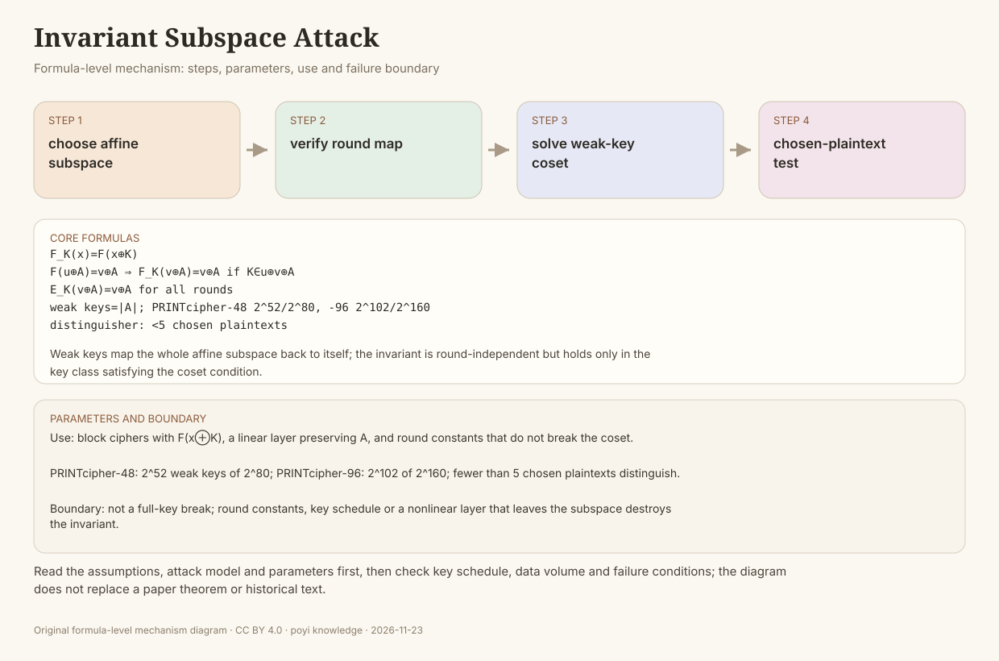
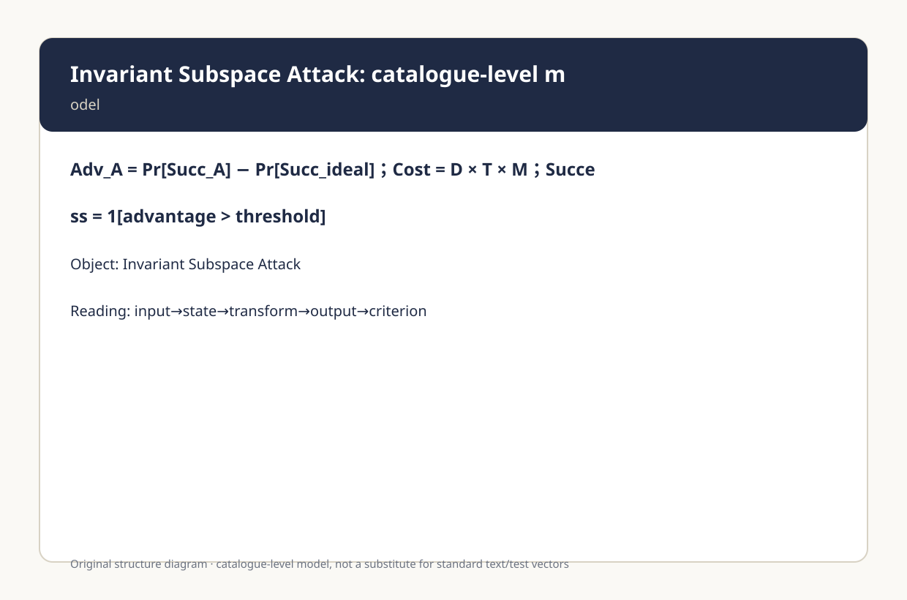

Principles
Attack: Invariant Subspace Attack (不变量子空间攻击). ### Affine subspaces and the round function
Let the block size be n and the round function be F_K(x)=F(x⊕K). Take an affine subspace u⊕A, where A is a linear subspace. If F maps u⊕A as a whole to v⊕A:
When the round key K lies in u⊕v⊕A, F_K(v⊕A)=F((v⊕A)⊕K)=F(u⊕A)=v⊕A, so the subspace is preserved in that round. ### Multi-round preservation and weak keys
If every round key lies in the corresponding coset, the full encryption satisfies E_K(v⊕A)=v⊕A. The number of weak keys is |A|. PRINTcipher-48 has 2^52 weak keys out of 2^80, and PRINTcipher-96 has 2^102 out of 2^160; for those keys, very few chosen plaintexts distinguish E_K from a random permutation.

Why it matters
An invariant-subspace attack uses a structural invariant, not a probabilistic approximation, and does not require recovering each round key. It shows that block-cipher security depends not only on S-box nonlinearity but also on whether round constants, key schedule and linear layer leave a subspace closed for weak keys.
The old catalog translation “invariant subtract” refers to this line of work; the standard name is invariant subspace attack. This entry does not treat a nonexistent “invariant subtract” paper as a source. Differential and linear attacks track probabilistic bias; invariant subspaces track probability-one orbits.
Applications
- Choose a candidate affine subspace u⊕A and check that the linear layer preserves A. 2. Compute the image of u⊕A under one round F; obtain v⊕A. 3. Solve the weak-key coset u⊕v⊕A. 4. Check whether the key schedule places every round key in the required coset. 5. Verify E_K(v⊕A)=v⊕A with chosen plaintexts and estimate the weak-key fraction.
Do not call a weak-key distinguisher a break of all keys; do not ignore round constants and key schedule; do not transplant the PRINTcipher parameters to other lightweight ciphers.
A shared name may belong to an algorithm, standard, event, person or term; this entry is responsible only for its catalogue binding and does not absorb adjacent records. If versions, regions or institutions define the name differently, the differences stay side by side.

Limits & attacks
- Weak-key restriction: the property holds only for keys in the coset, and the fraction |A|/2^k may be tiny. 2. Round constants and key schedule: one constant or round key outside the subspace breaks the multi-round invariant. 3. A distinguisher is not key recovery: it proves that weak keys exist but does not automatically yield the master key. 4. Design fixes: add nonlinear round constants, move round keys across cosets, or add diffusion in the linear layer; after a fix, the invariant search must be rerun.
History
In 2011 Leander, Abdelraheem, AlKhzaimi and Zenner analyzed PRINTcipher with the invariant-subspace attack at CRYPTO 2011, giving weak-key sets of 2^52/2^80 and 2^102/2^160.
In 2015 Leander, Minaud and Rønjom turned invariant-subspace detection into a generic algorithm and applied it to Robin, iSCREAM and Zorro, with weak-key density up to 2^-32. This entry follows the 2011 PRINTcipher paper; the 2015 paper is used only for the generalization.
Worked example & verification
Formal model and reproduction steps
[\mathrm{Adv}^{\mathrm{attack}}_A(\lambda)=\Pr[\mathrm{Game}_A(\lambda)=1]-\frac12]
Invariant Subspace Attack: the registered public parameters, key material or randomness, and message are mapped through the stated transformation to an output checked against the registered criterion. The worked example is a structural reproduction, not a new test vector; parameter ranges, standard versions and implementation details remain source-bound.
References
- Wikipedia search entry for 不变量子空间攻击. https://zh.wikipedia.org/w/index.php?search=%E4%B8%8D%E5%8F%98%E9%87%8F%E5%AD%90%E7%A9%BA%E9%97%B4%E6%94%BB%E5%87%BB
- Handbook of Applied Cryptography (Menezes, van Oorschot, Vanstone). https://www.cacr.math.uwaterloo.ca/hac/